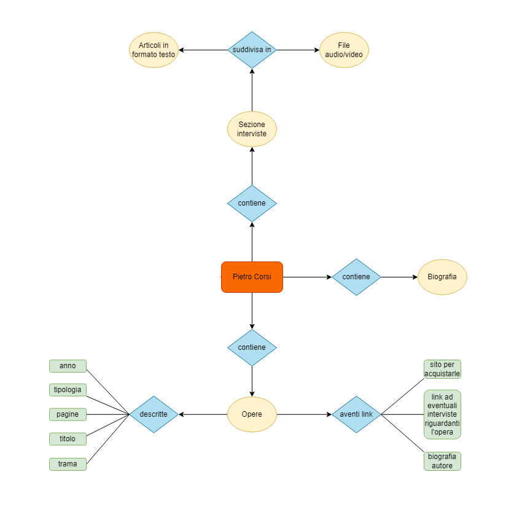

Indice
Obiettivi e finalità
Il mio sito si pone l’obiettivo di donare uno spazio nell’internet adeguato a uno dei più grandi scrittori Molisani contemporanei, Pietro Corsi. Quindi sarà principalmente un sito personale, dove spero di rendere giustizia a questo grande scrittore, visto che non è molto conosciuto fuori regione, anche per questo motivo si trovano poche informazioni in rete. Ma tornando a noi, la mia idea è quella di creare una risorsa web dove Pietro Corsi possa tornare in vita, introducendo in primis una biografia, in cui viene ripercorsa brevemente la vita dello scrittore e in secondo luogo una sezione in cui verrà introdotta e descritta tutta la produzione letteraria, e in cui ogni opera sarà accompagnata da un link che condurrà in siti ove è possibile acquistarle. Infine mi piacerebbe introdurre una sezione “interviste”, dove caricherò file audio, video e articoli di interviste tenute da Pietro Corsi durante la sua carriera.
Nel progettare il sito quindi si ha principalmente l’intenzione di far conoscere questo grande scrittore: per questo all’interno del sito saranno inseriti alcuni link che indirizzeranno il fruitore direttamente in diversi canali social, che saranno creati appositamente, nella speranza di aumentare il bacino di utenza del sito.
Tipologia di utenza
Questo sito sarà rivolto a tutti gli amanti della letteratura contemporanea. Permetterà di far conoscere l'eccellenza molisana anche fuori regione, visto che questo grande scrittore molto affermato in Molise non riesce a replicare lo stesso successo nel resto dello stivale. Il contenuto sarà lo stesso per tutti i tipi di utenti. Il sito non prevederà una sezione di login, in quanto in questo momento non ne vedo l’utilità. Principalmente utilizzerò file di testo, audio, immagini e video. Ovviamente il sito sarà accessibile sia da computer fisso sia da dispositivi mobili, così da soddisfare le esigenze di qualsiasi fascia d’età.
I contenuti utilizzati nel sito sono principalmente contenuti ottenuti di prima mano da parenti o conoscenti dello scrittore, quindi molti di questi contenuti non sono stati presi in rete.
Benchmark
Principalmente utilizzerò file di testo, audio, immagini e video. Ovviamente il sito sarà accessibile sia da computer fisso sia da dispositivi mobili, così da soddisfare le esigenze di qualsiasi fascia d’età.
I contenuti utilizzati nel sito sono principalmente contenuti ottenuti di prima mano da parenti o conoscenti dello scrittore, quindi molti di questi contenuti non sono stati presi in rete.
Struttura
Mappa concettuale
Si parla di mappa concettuale per definire il rapporto che intercorre fra le varie unità logiche di informazione. La mappa ragiona per parole chiave, e ha l’obiettivo di permettere di definire quale tipo di connessione logica esista fra tali parole. Popolare il sito con i contenuti è momento successivo a quello della mappa, che scaturisce dalla riflessione su quali siano i temi che si intendono affrontare, e rappresentare, e quali siano quindi le associazioni che, tra tali contenuti, è possibile stabilire. E' una sorta di rappresentazione dell'idea in forma grafica. Per realizzare la mappa ho utilizzato diversi colori ed elementi in modo da rendere la stessa più fruibile e leggibile. Di seguito è riportata la mappa realizzata con il software draw.io.

Schema delle dipendenze
Questo schema è una sorta di struttura gerarchica che mostra graficamente com’è strutturato il sito. Dalla home ad esempio è possibile accedere a diverse pagine, come la pagina “Biografia”, la pagina "Bibliografía" e la pagina relativa ad articoli ed interviste. Queste pagini sono tutte visitabili tramite la barra di navigazione. Poi per ogni pagina sono riportate tutte le sottopagine dipendenti. Di seguito è riportato lo schema realizzato con il software draw.io.
Categorie item
Di seguito ho riportato un esempio di un oggetto appartenente alla mia collezione:
Titolo : Omicidio in un paese di cacciatori
Autore: Pietro Corsi
Anno di pubblicazione : 2012
Breve descrizione : Sono gli anni Cinquanta a fornire il quadro temporale e umano a questo racconto. Al centro è un fatto di sangue inspiegabile che coinvolge tutti gli abitanti di un piccolo paese del Meridione.
Pagine : 236.
Layout
Le pagine del sito sono tutte fornite di un header, che è sempre delle stesse dimensioni, tranne che per la pagina home, che è leggermente più grande, per via del differente logo, utilizzato per dare maggiore visibilità. La navbar presenta tutti i canali di navigazione primaria presenti nel sito. Nel sito è presente anche il footer, dove è possibile raggiungere la pagina del project plan. Infine sono presenti in tutte le pagine (tranne nella home) dei breadcrumbs.
HOME

BIBLIOGRAFIA

LIBRI

ARTICOLI

DETTAGLI LIBRI

Usabilità
Per la realizzazione del sito ho sempre avuto come obiettivo la semplicità. Infatti il sito si presenta abbastanza pulito, ma soprattutto essenziale. Non ci sono troppe scritte, ma d’altro canto è popolato da molte immagini. Il colore predominante è il “Fuzzy Wuzzy” (#c16f6b), alternato con il bianco e gradazioni differenti del colore predominante. Per il font dei paragrafi si è scelta la font family “Hoefler Text" e "Times New Roman", mentre per il titolo la famiglia "Inter var" e "Helvetica Neue", caratteri che si abbinano alla perfezione ai colori predominanti nel sito. L’usabilità è garantita soprattutto dalla dinamicità del sito: la navbar è sempre la stessa e sempre raggiungibile, quando si scrolla la pagina è subito raggiungibile l’inizio della pagina tramite il pulsante “TO THE TOP”, gli strumenti di navigazione non cambiano mai di posizione, i colori utilizzati sono sempre gli stessi, al massimo si cambia gradazione, ed infine la home è raggiungibile non solo dalla na vbar e dal logo del menu, ma anche dalle breadcrumbs.
Servizi
Il sito prima di tutto è navigabile tramite la navbar, da cui si può accedere a tutte le pagine. Inoltre, in tutte le pagine sono presenti le breadcrumbs. Nella pagina relativa ai libri, inoltre, sono disponibili degli strumenti di navigazione, tra cui ordinamento in base al titolo oppure in base all’anno ed anche una barra di ricerca per cercare, appunto, tramite titolo. Nella pagina di ogni singolo libro, ma anche in altre pagine del sito, sono presenti link che rimandano sia a collegamenti interni sia a collegamenti esterni. Inoltre nella home è presente un collegamento link che rimanda ai social del sito.
Bibliografia
Per i contenuti:
- F. Tomasi, Metodologie informatiche e discipline umanistiche, Carocci, Roma 2008
- Francesca Tomasi, Organizzare la conoscenza: Digital Humanities e Web semantico. Un percorso tra archivi, biblioteche e musei, Milano, Editrice Bibliografica, 2022.
Per la realizzazione del sito:
- https://www.w3schools.com/
- https://virtuale.unibo.it/
- https://www.html.it/
- https://www.youtube.com/
Per le immagini:
La maggior parte le ho reperite di prima mano, avendo contatti molto stretti con amici e parenti del caro Pietro Corsi. Le foto di Pietro Corsi invece sono state prese, direttamente dall’archivio storico di Foto Kerem Casacalenda, con il benestare dello studio fotografico Foto Kerem.